Session 5.3
Chemical Water Detector
- Introduction
- Test Procedures
- Interpretation of Results
- Applications
- Storage, Life, and Supply
- Arrangements 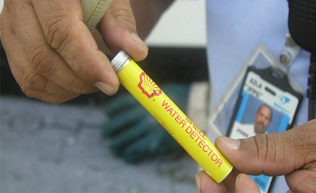
Control Check
- A 'Go/NoGo assessment of ‘free’ water content' device used to confirm the presence of free or suspended water in jet fuel
- CWD is designed to give a positive indication of free water in fuel at ppm (v/v) levels.
- CWD is a measure of undissolved free water in concentrations lower than those detectable by visual examination.
- The specification limit is 30 ppm (parts per million).
- Approved chemical water detector kits for use in jet fuel are CASRI water detector, Hydrokit, Shell Water Detector, POZ-T, etc.
- The Shell water detector is a chemical water detector commonly used for determining the presence in jet fuels of finely dispersed un-dissolved water in concentrations lower than those normally detectable by visual examination.
- Water dispersions of this type can result from the emulsification of a water/fuel mixture during pumping or from the precipitation of dissolved water due to a fall in fuel temperature.
- A plastic detector in which is fitted a disc of filter paper treated with water sensitive chemicals.
- Examine capsule for the expiry date and discard if exceeded.
- Examine capsule for any difference in color between the inner wetted portion, or target area, and the outer portion which is protected by the plastic molding.
- The paper should be a uniform yellow color, otherwise, discard the capsule.
- Fit the detector capsule to the syringe taking care not to touch the sensitized paper.
- Immerse the capsule and approximately half of the syringe in the sample under test and withdraw the plunger until the fuel reaches the 5 ml mark.
- It is important to note that:
- The screw cap should be replaced on the capsule container as soon as required capsule has been removed to prevent discoloration of the remaining capsules by atmospheric humidity.
- Unused capsules should not be left lying about or kept loose in the pocket.
- A capsule should be used only once and then discarded because sensitivity of the device is a function of quantity of fuel passed through the paper.
- The sample should not be swirled while drawing the 5 ml into the syringe; the objective is to determine the amount of freely suspended water in the product rather than how much can be agitated into suspension.
- Swirling also tends to concentrate any suspended water which would give a misleading test result (depending on where the capsule is relative to the concentration of water).
- The presence of dissolved water is indicated by a change in color of the center portion of the detector paper.
- The Shell water detector begins to react at a very low free-water concentration, even below 10 ppm, and resulting color change becomes progressively more noticeable with increasing water content until, at approximately 30 ppm, a distinct green color is obtained giving a positive indication of water contamination.
- At a lower free-water concentration a yellow/green color is obtained, which increases to blue/green and finally blue/black at very high levels of free water contamination.
- Particular care shall be taken to evaluate correctly the color of the capsule so that fuels with water levels below 30 ppm are not considered suspect.
- The precise color change produced by a given concentration of free water will vary slightly with factors such as the degree of water dispersion (droplet size), age and batch of capsule, lighting conditions and visual assessment by the operator.
- None of these factors should affect the practical detection of free water in jet fuels at the 30 ppm concentration level.
- Response of the Shell Detector is not altered significantly by any of the normally used
- Anti-oxidants, Corrosion Inhibitors, Static Dissipator Additives
- Fuel System Icing Inhibitor (FSII)
- The device can be used as follows to check samples of jet fuels immediately after they are drawn:
- Road vehicle and Rail Tank Car drain samples - before discharge into airport storage.
- Bottom samples from airport tanks - immediately before release.
- Refueller drain samples - after filling.
- Hydrant dispenser filter drain samples - after each aircraft fuelling.
- Daily drain samples from filtration equipment on hydrant delivery.
- Refueller loading racks.
- he life expiration date (month/year) is marked on the bottom of each tube of capsules and is also printed on one end of each box of ten (10) tubes.
- Expired capsules should not be used for any testing purposes.
- The recommended life for Shell water detector capsules is nine (9) months from the time of manufacture.
- The response of Shell water detector capsules to suspended water tends to deteriorate significantly after approximately nine (9) months. Also, water contamination of jet fuel may not be indicated reliably if capsules are used beyond that period.
Go/NoGo assessment of ‘free’ water conten
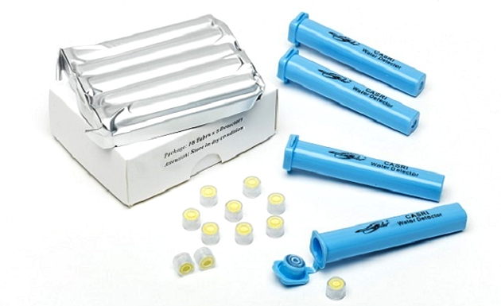
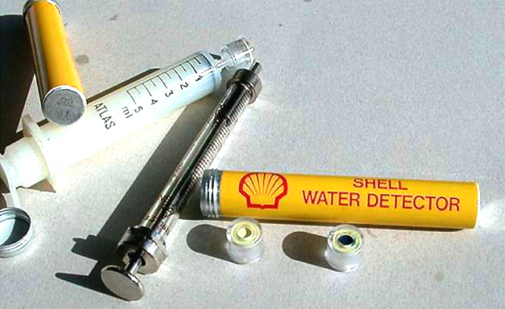
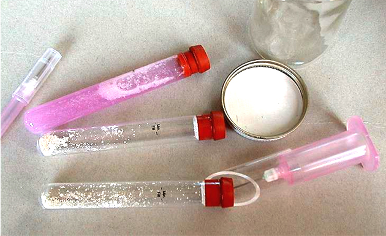
5.3.2 Shell Water Detector
Test Procedures
The detector consists of two (2) parts:
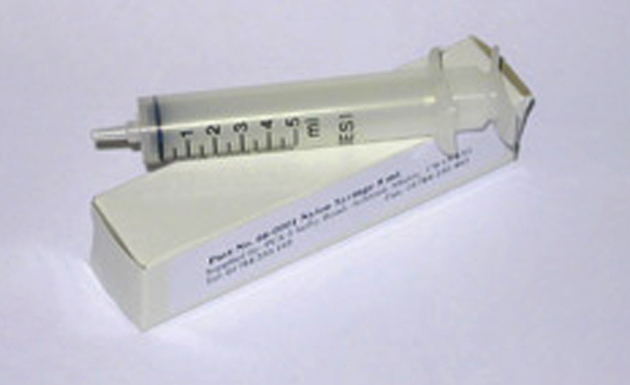
A standard polythene or nylon hypodermic syringe of 5 ml capacity with a record type nozzle fitting.
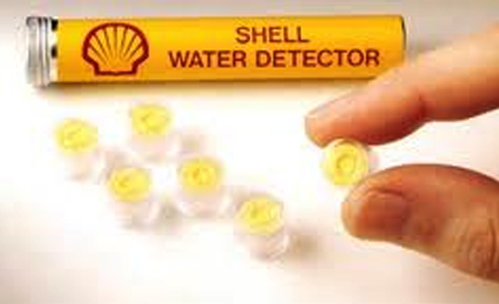
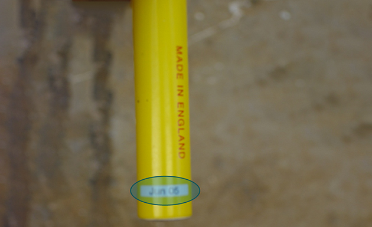
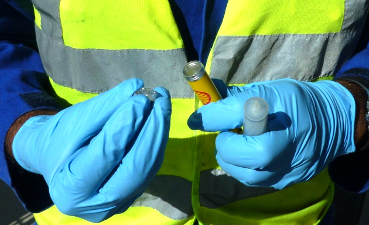
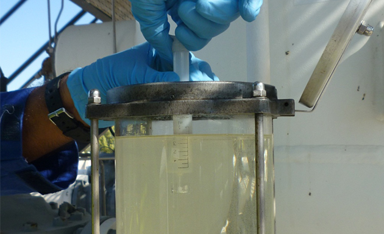
Swirling:
Interpretation of Results
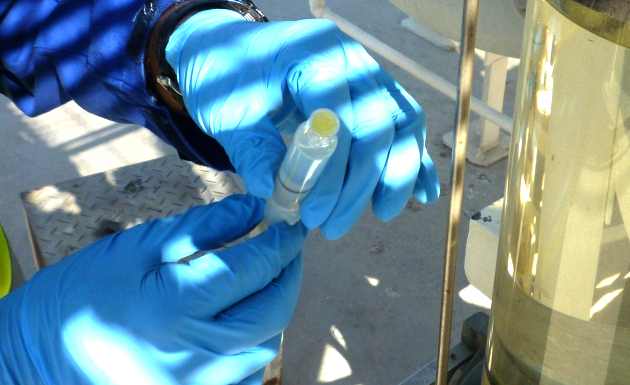
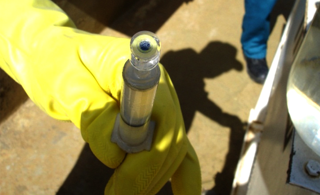
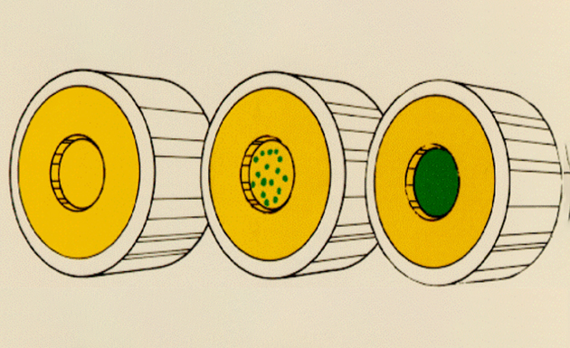
but a reduced detector response may be obtained with fuels containing:
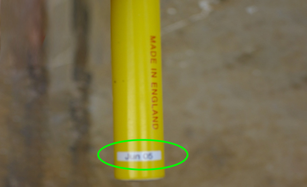
Storage Life & Supply Arrangements
5.3.3 In-Line Water Detection
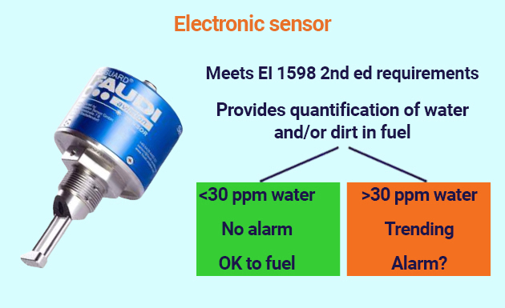
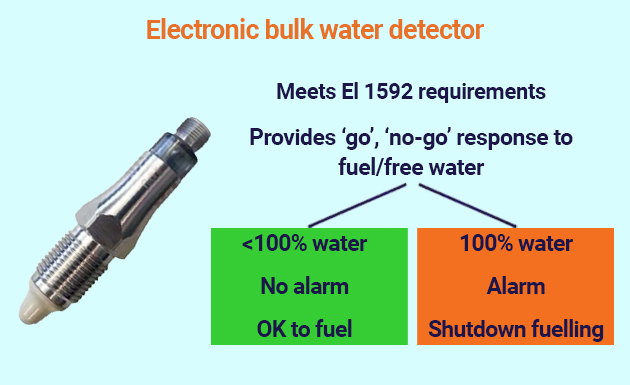
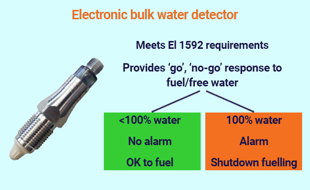